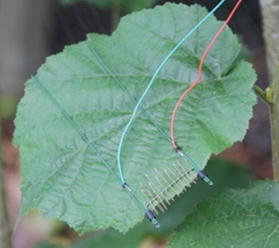
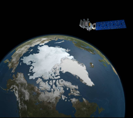

Geography
Geography is the study of processes and patterns on the earth's surface:
- Physical
- Human
- Human-Environment Interaction
Remote Sensing
Remote Sensing is the measurement of an object from some distance.
The term in situ is direct measurement.


Remote Sensing Data Model
Raster is a data model that takes the form of a grid-like structure that holds values at regularly spaced intervals over the extent of the raster.
A pixel is the smallest item of information in an image.
A remotely sensed image contains Digital Numbers, binary interger values often between 0-255 (8-bit).
The Digital Number is related to energy, radiance.
- Irradiance is the amount of light incoming to a certain point from possibly all directions.
- Radiance can be thought of as how much light the instrument sees from the object being observed.
- Reflectance the ratio of the amount of light leaving a target to the amount of light striking the target.